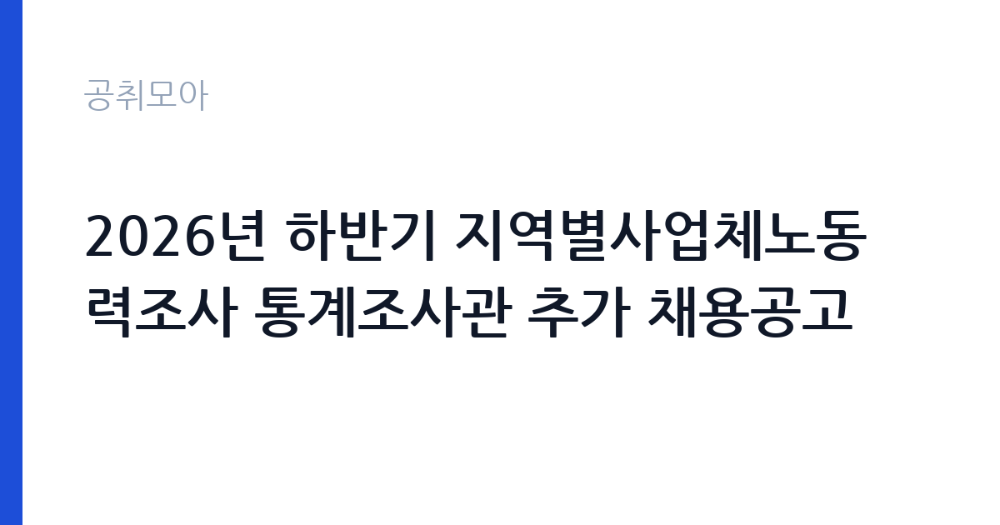

[국가기관] 2026년 하반기 지역별사업체노동력조사 통계조사관 추가 채용공고
고용노동부 서울지방고용노동청 서울북부지청 · 서울 · 마감 2026-11-09 (D-6) · 출처 나라일터

한눈에 보는 모집 조건
| 기관 | 고용노동부 서울지방고용노동청 서울북부지청 |
|---|---|
| 공고명 | 2026년 하반기 지역별사업체노동력조사 통계조사관 추가 채용공고 |
| 고용형태 | 기간제 |
| 근무지 | 서울 |
| 게시일 | 2026-11-03 |
| 마감일 | 2026-11-09 (D-6) |
지원자격, 이렇게 읽으세요
- 통계조사관 1명
- 접수 ~2026-11-09 마감
- 세부 조건은 원문 공고문 확인
기간제 근로자는 근로계약 기간이 정해진 신분입니다. 계약 기간과 갱신 가능 여부가 근로계약서에 명시되며 기간 만료 시 근로관계가 종료됩니다. 결원 보충이나 특정 사업 기간에 맞춰 채용되는 경우가 많아 업무 범위가 명확합니다. 이번 공고는 고용노동부 서울지방고용노동청 서울북부지청에서 직접 진행하는 자체 전형으로, 응시자격과 제출서류는 공고문에 항목별로 제시됩니다. 통계조사 업무는 학력 제한이 크지 않고, 조사 방식과 전산 입력을 실무에서 익힙니다. 조사원 경험이나 지역 지리를 아는 것이 실질적인 강점이 되고, 거주지와 조사 구역이 가까우면 유리합니다. 계약 기간이 조사 기간에 맞춰 정해지므로 시작일과 종료일을 먼저 확인해야 합니다. 대체근무라면 전임자의 담당 구역을 인수받는 형태가 일반적입니다. 서류는 접수 마감 이후 보완이 되지 않으므로 자격 요건과 증빙 서류를 마감 전에 모두 갖춰야 합니다. 공고문에 명시된 우대 사항은 해당 여부를 확인해 증빙을 첨부해야 가점이 반영됩니다. 자격 취득 예정자는 채용 공고의 예정자 허용 조항을 먼저 확인해야 합니다. 조항이 없으면 지원 자체가 반려될 수 있습니다.
이 공고의 포인트
이 공고의 첫 번째 포인트는 고용 형태입니다. 계약 기간이 정해져 있어 근무 종료 시점이 명확합니다. 그만큼 짧은 기간에 어떤 실적을 남길지가 중요해집니다. 두 번째는 업무 범위가 명확하다는 점입니다. 통계조사 직무로 채용되므로 배치 이후 담당 업무가 크게 흔들리지 않습니다. 세 번째는 근무지입니다. 서울 지역 근무로 접근성은 좋지만 그만큼 지원자가 몰리는 지역이므로 경쟁률을 넉넉히 잡아야 합니다. 지역 기반 채용이라 거주지와 통근 가능성이 실질적인 판단 기준이 됩니다. 같은 직무 공고 중에서는 접수 마감이 가장 빨라 일정을 앞당겨 잡아야 합니다. 다만 선발 인원이 1명으로 많지 않아 자격을 갖춘 지원자가 몰리면 경쟁률이 높아질 수 있습니다.
전형은 어떻게 진행되나
1차 서류, 2차 면접의 2단계로 진행되는 구성이 일반적입니다. 서류에서는 자격 요건과 경력 증빙을 확인하고, 면접에서는 실제 업무 수행 능력과 조직 적응을 봅니다. 직무에 따라 필기시험이나 실기, 컴퓨터 활용 시험이 추가되기도 하므로 공고문의 전형표를 먼저 확인하십시오. 단계별로 합격자만 다음 전형에 응시할 수 있고, 단계마다 응시 자격 확인 서류를 다시 제출해야 하는 경우가 있습니다. 최종합격자 발표 후에는 신원조회와 채용 신체검사가 남아 있습니다. 자격증 취득 예정자로 지원했다면 취득 증명 제출 기한을 반드시 지켜야 합니다.
원문에서 확인한 전형 방식
서울지방고용노동청 서울북부지청 통계조사관을 아래와 같이 추가 공개모집하오니 고용행정 분야의 전문성과 경륜을 갖춘 분들의 많은 지원를 바랍니다. ○ 채용분야 : 기간제 통계조사관(지역별사업체노동력조사) ○ 채용기간 : 2026.11.16.(월) ~ 2026.12.17.(목) ○ 채용인원: 1명 ○ 선발방법 : 입사지원 > 서류전형 > 1차면접 > 최종합격 ○ 접수방법: 고용24(www.work24.go.kr) 홈페이지의 e-채용마당을 통해서만 접수 가능(메일, 우편, 방문접수 불가) ○ 서류접수기간: 2026.11.3.(화)~2026.11.9.(월) 18:00 까지 ○ 담당부서(연락처) : 지역협력과(02-950-9745) 기타 자세한 사항은 첨부된 공고문을 참조하시기 바랍니다.
이런 분께 추천해요
- 대면 조사·응대 경험이 있는 분
- 담당 지역 지리를 잘 아는 분
- 조사 기간 중 연속 근무가 가능한 분
지원 전 체크리스트
- 응시자격 요건과 경력 기준을 충족하는가 — 경력은 증명서로 입증해야 합니다
- 계약 기간과 근무 시작일·종료일을 확인했는가
- 제출서류 목록을 모두 준비했는가 — 누락 시 서류 단계에서 탈락합니다
- 접수 마감 2026-11-09 이전에 접수 방식을 확인해 제출했는가
모집 일정과 제출 타이밍
접수 마감은 2026-11-09이고 공고는 2026-11-03에 게시되었습니다. 준비 기간 6일 안에 서류 작성, 증빙 발급, 접수를 모두 마쳐야 하므로 주말을 포함해 일정을 미리 나누는 것이 좋습니다. 특히 경력 기술서나 직무수행계획서를 요구하는 공고는 작성에 시간이 걸리므로 첫날 초안을 잡으십시오. 서류 합격자 발표와 면접 사이 간격이 짧은 경우가 많아 면접 예상 질문은 서류 제출 전에 정리해 두는 편이 유리합니다. 마감 직전에는 접속이 몰리므로 여유를 두고 제출하십시오. 임용 예정일이 빠르게 잡히는 공고이므로 현재 일정과 겹치지 않는지 미리 확인하십시오. 서울 근무지는 대중교통 접근성이 좋은 대신 주차와 통근 시간이 변수입니다. 출퇴근 경로를 미리 확인하십시오. 마감까지 일주일 안팎이 남아 서류 준비와 증빙 발급을 병행해야 합니다. 선발 인원이 한두 명 수준이라 지원자 개개인의 서류 완성도가 그대로 평가에 반영됩니다.
직무 이해하기: 국가기관
고용노동부와 지방고용노동청은 근로 감독과 고용 지원, 산업 안전을 담당하는 중앙행정기관입니다. 지청 단위로 사업을 운영하며 공무직 인력은 시설 관리와 민원 지원 업무를 맡습니다. 민원 응대 비중이 높아 절차 준수와 친절도가 평가에 반영됩니다. 통계조사 업무는 지정된 표본 가구나 사업체를 방문해 조사 항목을 확인하고 응답을 입력하는 일입니다. 조사표를 지참해 방문하고, 응답자에게 조사 목적과 비밀 보호를 설명한 뒤 항목별 응답을 받아 전산에 입력합니다. 조사 기간이 정해져 있어 기간 안에 배정된 표본을 모두 처리해야 하고, 부재나 거절 시 재방문 일정을 잡습니다. 응답 내용은 통계 목적 외에 사용할 수 없어 비밀 유지 의무가 엄격합니다. 업무는 혼자 처리하기보다 부서 단위로 나눠 진행되므로 담당 구역과 협업 범위를 입사 초에 확인하는 것이 중요합니다. 업무 강도와 근무 시간대는 부서 배치에 따라 달라지므로 면접에서 확인하는 것이 가장 정확합니다.
자기소개서 작성 팁
지원서는 대면 조사나 응대 경험을 구체적으로 쓰는 것이 효과적입니다. 방문 조사·설문·판매 등 사람을 직접 만나 업무를 처리한 경험을 적고, 거절을 설득한 사례를 덧붙이십시오. 지역 지리와 이동 수단을 잘 안다는 점은 실무 강점입니다. 조사 기간 동안 결근 없이 일할 수 있다는 점을 분명히 밝히십시오. 문항별 글자 수 제한을 먼저 확인하고, 각 문항의 첫 문장에 결론을 배치하는 방식이 읽기 쉽습니다. 지원 동기는 기관의 어떤 사업에 기여하겠다는 한 문장으로 시작하고, 이어서 본인의 경험을 근거로 붙이십시오. 감점을 피하려면 다른 기관에 보낼 수 있는 범용 문장을 그대로 쓰지 않는 것이 중요합니다. 기관 이름과 사업명이 문장 안에 자연스럽게 들어가야 준비도가 드러납니다.
면접 준비 포인트
면접에서는 응대 방식과 조사 윤리를 확인합니다. 응답자가 조사를 거절하거나 의심할 때 어떻게 설득할지, 응답 내용을 다른 사람에게 말해달라는 요청이 오면 어떻게 대응할지 묻습니다. 비밀 유지와 절차 준수를 먼저 언급하십시오. 조사 구역을 어떻게 파악할지 구체적으로 답하면 신뢰를 얻습니다. 답변은 상황, 판단, 조치의 순서로 정리하면 전달이 분명해집니다. 모르는 질문에는 모른다고 밝히고 확인 방법을 제시하는 편이 억지 답변보다 낫습니다. 마지막에는 근무 의사와 함께 2026-11-09 이후 일정에 언제든 응할 수 있다는 점을 전달하십시오. 마지막 질문 시간에는 근무 조건에 대한 확인 사항을 한 가지 정도 준비해 가면 성실성이 드러납니다.
급여·근무조건 읽는 법
통계조사 기간제근로자 보수는 통계청의 기간제 임금 기준을 따르며, 월급 또는 일급 형태로 지급됩니다. 조사 기간이 정해져 있어 총 근무 일수를 곱해 총액을 계산해야 합니다. 정확한 금액과 수당 항목은 공고문 처우 항목에서 확인하십시오. 다만 고용노동부 서울지방고용노동청 서울북부지청의 보수 수치는 이 글에서 확인된 공시 자료가 없어 추정해 제시하지 않았습니다. 공고문 처우 항목과 첨부된 보수표를 기준으로 확인하십시오. 알리오 2025년 결산 공시 기준 공공기관 전체 일반정규직 1인당 평균보수는 7,376만 9천원, 신입사원 평균초임은 4,031만 6천원입니다(무기계약직 미포함). 2026년 적용 최저임금은 시급 10,320원, 월 환산 2,156,880원(주 40시간·209시간 기준)입니다. 고용노동부 고시 제2025-47호로 확정된 금액입니다. 공고문에 금액이 제시되지 않은 항목은 원문 보수표나 처우 설명에서 확인해야 하며 확인되지 않은 수치는 쓰지 않는 것이 원칙입니다. 비교할 때는 월 급여뿐 아니라 상여·명절휴가비·복지포인트·초과근무수당까지 포함한 연간 총액으로 계산하십시오. 기간제라면 계약 기간 동안의 총액을, 무기계약이라면 호봉 상승과 정년까지의 누적 소득을 기준으로 판단하는 편이 정확합니다.
자주 묻는 질문
- 선발 인원은 몇 명인가요?
공고문 기준 1명입니다. 직종별로 인원이 나뉘는 경우가 있으니 모집분야 항목을 함께 확인하십시오. - 근무지는 어디인가요?
서울 지역의 고용노동부 서울지방고용노동청 서울북부지청 소속 근무지입니다. 세부 주소와 출퇴근 조건은 원문 공고문에서 확인할 수 있습니다. - 보수는 얼마인가요?
채용 신분(기간제)과 기관 임금 규정에 따라 정해지며 구체적인 금액은 공고문 처우 항목에 제시됩니다. 금액이 공개되지 않은 경우에는 원문의 보수표를 확인하십시오.
함께 보면 좋은 공고
[국가기관] 임기제공무원(일반임기제, 통번역 6급, 1명) 경력경쟁채용 공고 — 마감 2026-11-18[국가기관] 2026년도 제7회 국립목포대학교 기간제 채용 공고 (인권센터 상담) — 마감 2026-11-13[국가기관] 경산세무서 공무직 근로자(환경관리) 채용공고 — 마감 2026-11-09출처: 나라일터 공개정보를 바탕으로 공취모아가 정리한 안내글입니다. 모집 조건·일정은 변경될 수 있으니 지원 전 반드시 원문 공고문을 확인하세요. 본 글은 정보 제공용이며 합격을 보장하지 않습니다.